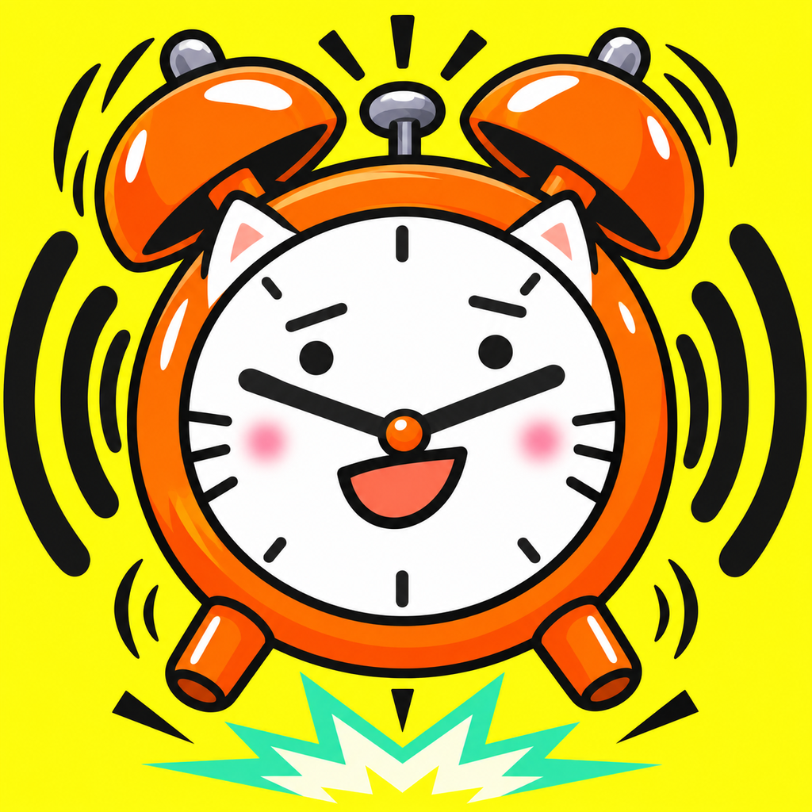
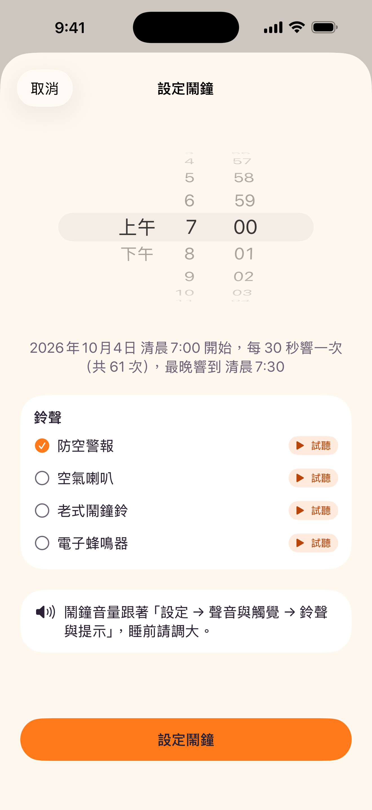
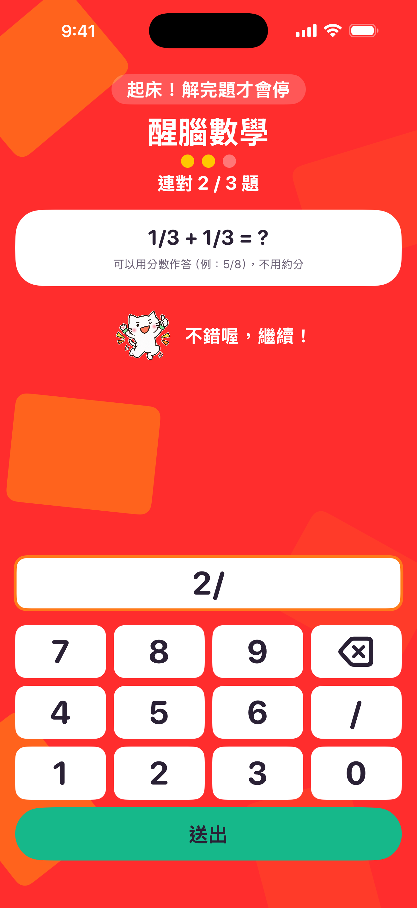
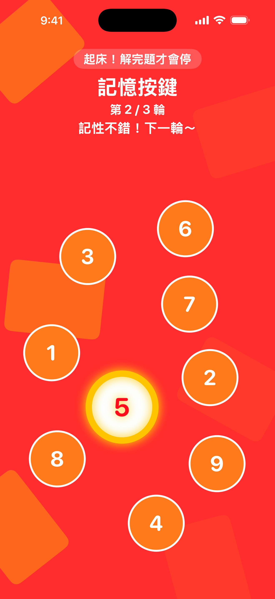
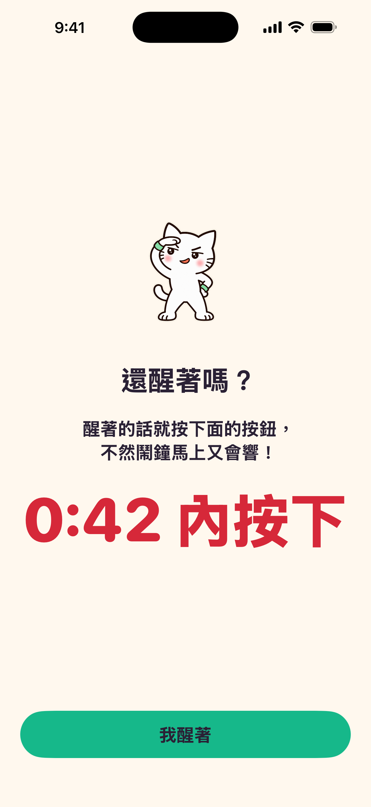

CHECK 01
核對是今天還是明天
選過去的時間時，下一次起床日期可能是明天。以設定頁與首頁顯示為準，避免只看時鐘數字。

白貓工作室鈴聲只是開始。算幾道題、記一串按鍵，再回來說一聲「我醒著」——把起床拆成清楚的每一步。
選時間、選鈴聲，最後回首頁確認。一次設定的是接下來的一次起床流程。

首頁點「設定鬧鐘」，先看清楚日期，再選你想起床的時間。
鬧鐘音量跟著 iPhone「設定 → 聲音與觸覺 → 鈴聲與提示」。睡前先確認音量與實際響鈴；試聽時不要戴耳機。
選過去的時間時，下一次起床日期可能是明天。以設定頁與首頁顯示為準，避免只看時鐘數字。
若顯示「還沒允許鬧鐘權限」，按「打開設定」，確認「鬧鐘與計時器」已允許，再回 App 重新檢查排程。
產品名稱是口號，不能保證每個人都會醒。重要行程請另外準備備用鬧鐘，並先用自己的裝置試一次。
鬧鐘響時打開 App，依序完成數學與記憶按鍵。App 內沒有一鍵略過關卡的貪睡流程。

看完題目，再用下方鍵盤輸入答案。分數用「／」，不必先約分。
切到背景再回來，未完成的數學關卡會重新計算連對數，目標題數保留。

畫面有 9 個數字按鈕。先看它們依序閃亮，再照剛才的順序按回去。
切到背景再回來，已完成的輪數保留，但當前這一輪需要重來。

在主鬧鐘響鈴期間完成兩關、按「我醒了」之後，App 會安排一次清醒確認。
確認按鈕是否可按也取決於系統鬧鐘的實際狀態；請依目前畫面與倒數操作。
按「我醒了」，進入清醒確認流程。
確認鬧鐘響，打開 App 按「我醒著」。
未確認則接續追加鬧鐘與關卡。
在首頁按「取消鬧鐘（要先過關）」，完成數學與記憶兩關後取消。取消模式可按「返回」放棄取消，原鬧鐘照舊；在起床時間之前取消，不會接續「還醒著嗎」確認。
主連環排程最多涵蓋 30 分鐘。若全部響完仍未完成，首頁會顯示「鬧鐘已結束、未完成關卡」。實際響鈴間隔與次數以設定頁顯示為準，並非無限響鈴。
系統停止鈕仍然存在。停止單次響鈴不等於取消後續連環排程；要結束 App 內的起床流程，請打開 App 依步驟過關。
先看 App 顯示的錯誤與鬧鐘權限，再核對日期、時間、鈴聲與提示音量。系統狀態也可能影響排程與響鈴，手冊不保證背景或過夜送達；請先做裝置實測。
目前流程是設定下一次起床的鬧鐘，沒有在此手冊中列為已具備的每日或每週重複功能。每次需要時，回首頁確認或重新設定。
目前鍵盤與答案格式使用整數或分數，例如 12、3/4；分數不必約分，分母不能是 0。請輸入完整格式後送出。
不是。圖片是專案正式收錄的乾淨示範畫面，沒有讀取你的個人鬧鐘資料。畫面中的日期與題目僅作操作說明。